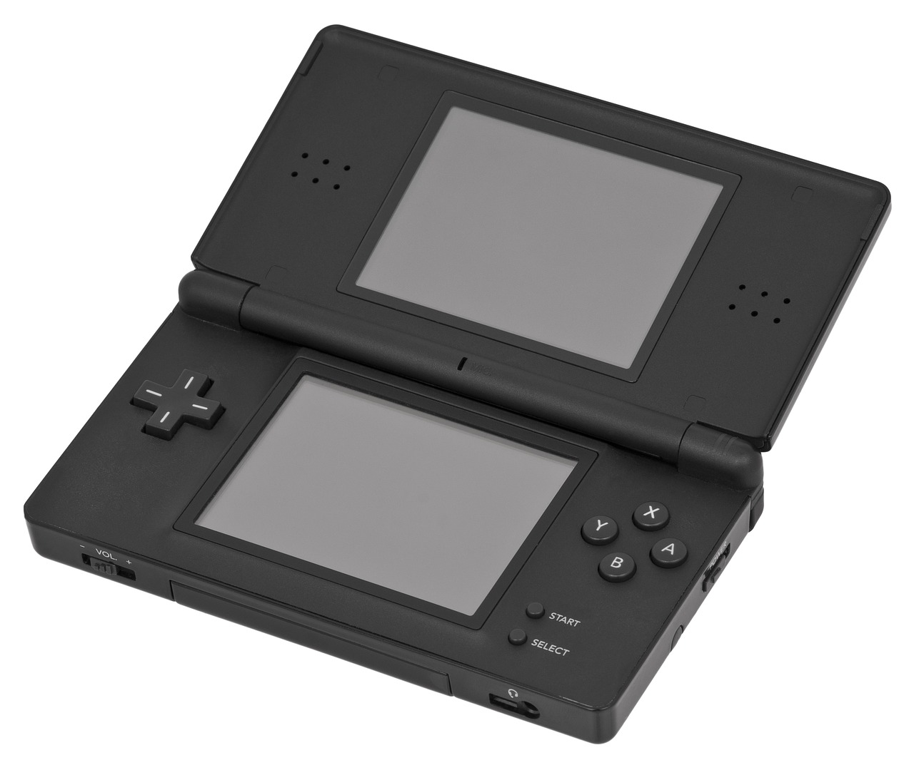
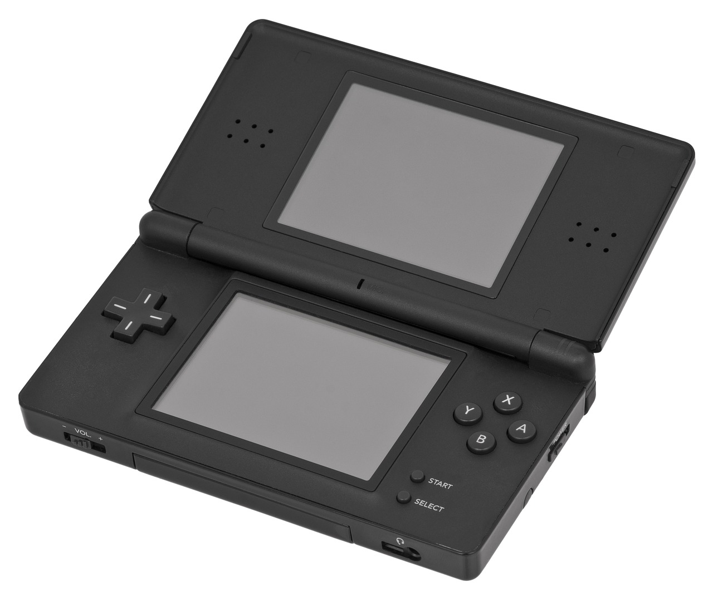

À propos
Notre histoire sur les consoles
Découvrez nos histoires sur les consoles de Nintendo, leurs années d'apparitions et l'utilité de chaque consoles après avoir été créés.
Nos collection des consoles
Voici les consoles de Nintendo qui sont apparues jusqu'à présent.

Color TV-Game - 1977


 



Contact
Vous avez besoin d'aide ou des questions à propos de nos ventes? N'hésitez pas à nous contacter au (123) 456-7890.
Abonnement infolettre
Veuillez vous abonnez à notre infolettre pour les dernières nouvelles, promotions, précommandes et plus encore.
Fermer